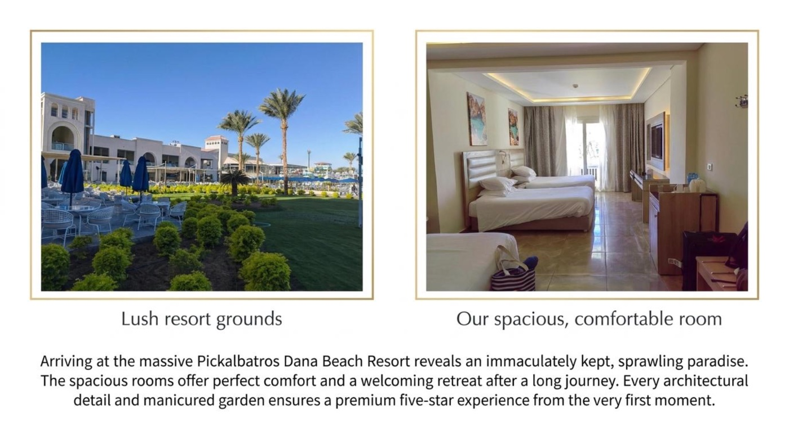
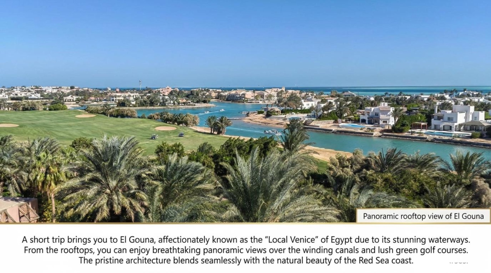
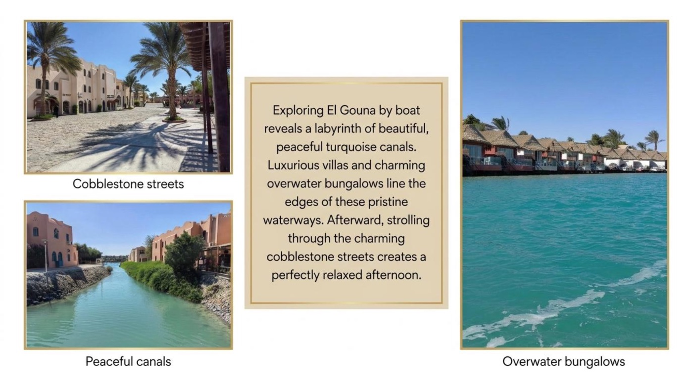
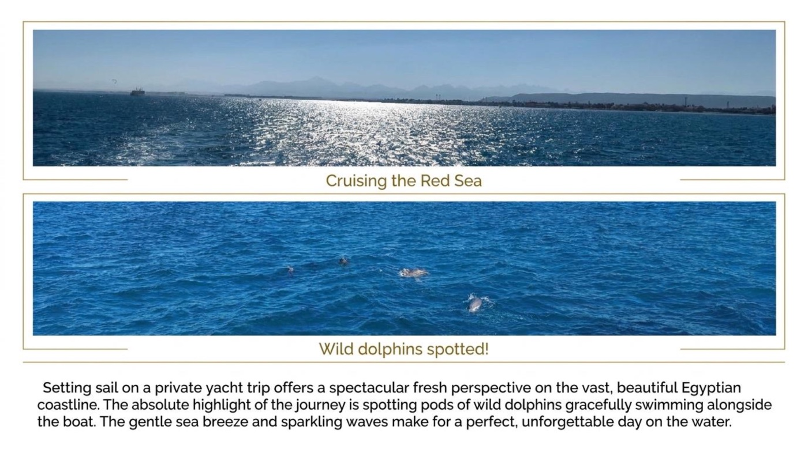
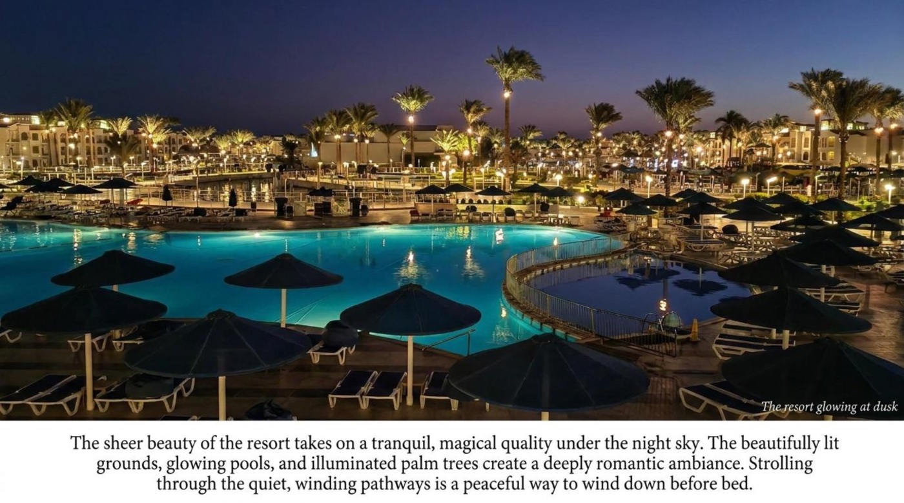

Hurghada: A Five-Star Egyptian Adventure — Learn to Describe Luxury, Nature, and Culture in Vivid English
Few places capture the imagination quite like a stretch of crystal-clear Red Sea coastline. Turquoise water shimmers over pale sand, palm trees lean over peaceful lagoons, and resorts stretch so far that guests need a boat to explore them all. Interestingly, the same scenes that attract travelers also make excellent English lessons, because every photograph invites a precise and colorful description.
This article explores an illustrated English lesson titled Hurghada 2026, built around the Pickalbatros Dana Beach Resort on Egypt’s Red Sea coast. The lesson follows one guest’s journey from the arrival gardens to the desert, from the coral reefs to the evening shows. It is educational because the pictures give the words a concrete meaning, and the words give the pictures a voice. Remember that the real value lies in the language. Adjectives such as pristine, lush, and panoramic transform ordinary places into memorable stories.

📌 Content and Context
The lesson presents a complete holiday through a sequence of carefully chosen images. It begins with the grounds and rooms of the Pickalbatros Dana Beach Resort, moves through the lobby, the restaurants, the pools, and the private beach, and then carries the reader out to the desert and the canals of El Gouna. A private yacht trip brings the story onto open water, and the final scenes show the resort glowing after sunset. The narrative closes with a guest’s heartfelt reflection, which gives the journey a satisfying ending.
The text beneath each image is short, yet remarkably dense. Most captions combine a concrete noun, such as chandelier, umbrella, or canal, with an evaluative adjective, such as breathtaking, immaculate, or unforgettable. This pattern is a key point for language learners. Strong travel writing shows and evaluates at the same time, so the reader sees the place and feels its quality within a single sentence.
It should be noted that the lesson uses promotional language, which means it highlights the finest features of the resort. Pay attention to this tone. Marketing texts are persuasive by design, so reading them critically while borrowing their vocabulary is an excellent exercise for intermediate and advanced learners.
Arrival, Gardens, and Rooms

The lesson opens its tour with a single, confident statement that sets the tone for everything that follows.
“Arriving at the massive Pickalbatros Dana Beach Resort reveals an immaculately kept, sprawling paradise.”
The verb reveals is a clever choice. It suggests that the resort unfolds gradually, the way a painting appears when a curtain lifts. The adjective sprawling then describes the sheer size of the grounds, while immaculately kept reassures the reader that every corner is cared for. The text also highlights the rooms, which offer “perfect comfort and a welcoming retreat after a long journey.” Together, these sentences link the physical space with the feeling of relief that a traveler experiences.
Imagine stepping off a long flight and walking across the lawns toward the entrance. The five-star promise seems to be confirmed by every manicured hedge. A guest might later say, “After such a long journey, our room felt like a welcoming retreat.” That sentence borrows the lesson’s own vocabulary and fits naturally into a travel review.
📌 Practical advice: When you describe a place, begin with the overall impression, then move to a single striking detail. The lesson does exactly this. It describes the sprawling resort first and the spacious room second, so the reader moves from the big picture to the personal experience.
A Lobby That Looks Up

The grand lobby receives the same careful treatment, and its central image is the ceiling rather than the furniture.
“The grand lobby immediately captivates visitors with its breathtaking, beautifully decorated ceiling and intricate patterns.”
Notice how the lesson moves from the verb captivates to the noun phrase intricate patterns. A captivated visitor is someone whose attention has been held completely, and the text then explains why. The lobby is described as an ornate space in which chandeliers cast a warm glow over comfortable seating. The lesson concludes that the lobby serves as “the perfect, elegant gathering place to relax.”
Picture a guide leading a small group through the hall. She might say, “Please look up for a moment, because the ceiling is the real star of the lobby.” Her sentence directs attention in exactly the same way the lesson does, and it shows learners how to guide an audience through a description.
📌 Practical advice: Use verbs of perception, such as look, notice, or admire, when you guide someone through a place. These verbs make your description feel like an invitation rather than a list.
Dining Like a Connoisseur

Food occupies a generous part of the lesson, and the vocabulary becomes especially vivid in this section.
“Culinary delights await at the resort’s numerous restaurants, offering a vast array of fresh, global cuisines.”
The phrase a vast array of is a useful collocation that native speakers use to describe a wide selection. The lesson then names a standout feature: the dedicated sweets restaurant, “overflowing with decadent cakes and beautifully presented traditional pastries.” The verb overflowing conveys abundance, and the adjective decadent conveys pleasure and temptation.
The closing sentence of this text contains one of the most memorable images in the lesson. “Every meal is a feast for both the eyes and the palate.” The sentence joins sight and taste in one phrase, which is a powerful technique in descriptive English. We will return to this idea in the section on metaphors.
Imagine a guest reviewing a breakfast buffet. She might write, “The pastries looked as good as they tasted, and the cakes were absolutely decadent.” This short review uses the lesson’s adjectives naturally and shows that a single word can carry a whole opinion.
Pools, Palms, and an Artificial River

The resort’s outdoor areas combine comfort with a sense of discovery, and the text shows how one feature can change the mood of an entire property.
“A unique artificial river winds its way completely through the property, adding a touch of peaceful magic.”
The phrase a touch of peaceful magic is a strong example of a light metaphor. It does not claim that the river is magical in a literal sense. Instead, it describes the calm feeling that the water creates. The lesson continues with the invitation: guests can take “a gentle, relaxing boat ride along this serene waterway.” The adjective serene is another useful word, because it describes calm that is both quiet and beautiful.
Remember that the pool text also uses the phrase surrounded by lush greenery. When you describe a garden, place the adjective before the noun to create rhythm, as in lush greenery, and add a verb that shows the relationship, such as surrounded by or shaded by.
A Beach Without Limits

The private beach is the lesson’s most generous image, and its language emphasizes both space and availability.
“The incredibly spacious private beach ensures that guests can always find a free spot to relax, no matter the time of day.”
The word ensures is a confident verb. It promises a result rather than hoping for one. The second paragraph of the slide adds the sensory details: “Comfortable loungers and vibrant blue umbrellas stretch across the pristine sandy shores.” The verb stretch makes the beach seem endless, and the adjective vibrant adds energy to the blue umbrellas.
A real-life scenario makes this language practical. Suppose a family arrives at noon and worries that no sunbeds are left. The beach description reassures them, and a parent might reply, “Do not worry, the beach is spacious enough for everyone.” That reply uses the same logic as the lesson, which connects size with availability.
⚠️ Watch out for this: The adjective free has two meanings here. It can mean “without cost” or “not occupied.” The lesson uses it in the second sense, which is common in describing available spaces.
Crystal Waters and Coral Gardens

The lesson moves from the surface of the sea to the world beneath it, and the language shifts with the depth.
“The crystal-clear, turquoise waters of the Red Sea gently lap against the shore, inviting endless swims in the shallows.”
The verb lap imitates the gentle sound of small waves, and this sound-based verb gives the sentence a calm rhythm. The lesson then turns downward with the phrase “a vibrant underwater world teeming with incredible marine life.” The verb teeming means that the water is full of living things, and it creates a sense of abundance that matches the earlier images of luxury.
Interestingly, the lesson moves from a simple invitation to an emotional conclusion: “Exploring the colorful corals and exotic fish makes every snorkeling session unforgettable.” The structure makes the activity the subject of the sentence and the feeling the object, which is a useful pattern for describing experiences.
📌 Practical advice: Build descriptions in layers. Start with what is above the surface, then move to what lies beneath. The lesson uses this structure to take the reader gradually into a new world.
Into the Desert

The lesson does not stay inside the resort. It leaves the coast for an adventure in the desert, and the vocabulary shifts toward action and cultural discovery.
“Adventure calls with a thrilling quad-bike desert safari venturing deep into the sweeping sand dunes.”
The personification in adventure calls treats excitement as a living voice that invites the traveler. The phrase venturing deep into suggests movement into the unknown, and the adjective sweeping describes the curved shapes of the dunes. The lesson then introduces a traditional camp, described as “a fascinating glimpse into authentic local culture and architecture,” where the visitor encounters a Bedouin community.
The final sentence describes the evening: “The excursion concludes beautifully with mesmerizing fire shows under the starry desert sky.” The adjective mesmerizing describes a sight that holds attention completely, and the word concludes signals a satisfying ending.
Imagine a visitor who describes the trip to a friend: “The quad bikes were thrilling, but the fire show under the stars was truly mesmerizing.” This sentence shows that a single contrast, between a thrilling activity and a mesmerizing one, can give a review variety and rhythm.
El Gouna: The Local Venice

A short trip brings the lesson to El Gouna, a town whose nickname carries much of the descriptive power of this section.
“A short trip brings you to El Gouna, affectionately known as the “Local Venice” of Egypt due to its stunning waterways.”
The phrase “Local Venice” is a comparison that helps the reader imagine the canals before seeing them. The lesson continues with a view from above: “From the rooftops, you can enjoy breathtaking panoramic views over the winding canals and lush green golf courses.” The adjective panoramic signals a wide view, while winding suggests the curved path of the water.

The lesson then moves from the view to the experience on the ground and on the water. “Exploring El Gouna by boat reveals a labyrinth of beautiful, peaceful turquoise canals.” The noun labyrinth suggests a maze, and the reader pictures a network of waterways that invites exploration. The text also praises “charming overwater bungalows” that line the edges of the water, which is a striking image for learners who want to describe unusual architecture.
The idea of a relaxed day is captured in one sentence: “Afterward, strolling through the charming cobblestone streets creates a perfectly relaxed afternoon.” Notice how the adverb perfectly modifies an adjective that describes a mood. This is a helpful pattern for emphasis in English.
📌 Practical advice: A nickname such as “Local Venice” is a shortcut for a complex picture. When you travel or write, look for a familiar comparison that helps your reader imagine something unfamiliar.
Cruising the Red Sea

The yacht trip offers the lesson’s most dynamic moment, and its language celebrates movement, wildlife, and surprise.
“Setting sail on a private yacht trip offers a spectacular fresh perspective on the vast, beautiful Egyptian coastline.”
The phrase a fresh perspective is a metaphor for seeing something familiar in a new way. The lesson then states its highlight with precision: “The absolute highlight of the journey is spotting pods of wild dolphins gracefully swimming alongside the boat.” The noun pods is a specialized term for groups of dolphins, and it adds authenticity to the description. The adverb gracefully shows the animals’ movement without listing it as an action.
The closing sentence combines three sensory details into one memorable conclusion: “The gentle sea breeze and sparkling waves make for a perfect, unforgettable day on the water.” The phrase make for is a useful collocation meaning that something creates or provides a particular result.

Not every guest wants to enter the water, and the lesson gives those travelers an equally appealing option.
“For those who prefer to stay dry while exploring, a glass-bottom boat or semi-submarine tour offers a magical window into the deep.”
The metaphor a magical window into the deep is one of the most useful images in the lesson. A window lets you see without touching, and it turns the sea floor into a view rather than a destination. The text also explains that the bright yellow vessel “provides comfortable, expansive viewing of the intricate coral reefs below.”
Remember that the lesson presents this option as “a fantastic and accessible way to witness the Red Sea’s rich marine biodiversity.” The word accessible is particularly important for language learners, because it describes an experience that many people can enjoy regardless of their swimming ability.
When the Sun Goes Down

After a busy day, the lesson turns to the evening, when the resort takes on a completely different character.
“As the sun sets, the huge resort completely transforms, coming alive with spectacular evening entertainment.”
The verb transforms shows a complete change, and the phrase coming alive gives the resort human energy. The lesson describes the performances as “elaborate stage shows, talented dancers, and thrilling acrobatic performances” that captivate audiences nightly. The phrase cap off at the end of the text is a lively phrasal verb meaning to finish something in a satisfying way. The sentence is “Enjoying these incredible shows with a drink in hand is the ideal way to cap off a busy day.”

The resort’s quiet side appears in the final evening image, where the mood becomes calm and intimate.
The lesson describes this scene as “a tranquil, magical quality under the night sky.” It continues with the phrase “deeply romantic ambiance,” and it recommends a slow walk through the grounds as “a peaceful way to wind down before bed.” The noun ambiance is useful for describing the feeling of a place, and the phrasal verb wind down describes the gradual relaxation that follows an active day.
📌 Practical advice: Describe the same place at different times of day. The lesson shows a resort at midday, in the afternoon, and at night, and each time the vocabulary changes to match the light and the mood.
A Guest’s Final Word

The lesson ends with a personal reflection that gathers the key ideas into one warm voice.
“The flawless five-star service at the Pickalbatros Dana Beach Resort left us with memories to last a lifetime.”
The phrase memories to last a lifetime is a common English expression, and it works well in reviews, letters, and conversation. The writer then lists the experiences that shaped the memories, from “relaxing on the spacious pristine beaches” to “exploring the vibrant country and Red Sea.” The final promise is simple and warm: “We leave with full hearts and a promise that we will definitely be back.”
📚 Vocabulary and Language Takeaways
The lesson’s vocabulary is concentrated in descriptive adjectives and a few expressive nouns. These words do more than decorate a sentence. They carry the emotional tone of the entire presentation and show learners how a short phrase can paint a complete picture. The flip cards below present six key terms, so you can test your memory before reading the detailed notes that follow.
🃏 Vocabulary Flip Cards
Each card shows a key term on the front. Activate a card to flip it and reveal its literal meaning, its contextual meaning, an example from the lesson, and a note on why it matters.
📚 Detailed Notes on Each Term
1. Five-star (adjective)
Literal meaning: Rated with five stars, the highest grade in many hotel classification systems.
Figurative and contextual meaning: Outstanding luxury, comfort, and attentive service.
Example from the material: “a premium five-star experience from the very first moment.” This phrase shows that the term describes the whole arrival experience, not only the building. The word premium reinforces the idea of high quality.
How the material explains this term: “The flawless five-star service at the Pickalbatros Dana Beach Resort left us with memories to last a lifetime.” The closing text connects the rating with a feeling that lasts. The lesson therefore treats the term as a promise that becomes a memory.
2. Pristine (adjective)
Literal meaning: In its original condition, untouched by damage, dirt, or change.
Figurative and contextual meaning: Perfectly clean and beautifully preserved.
Example from the material: “stretch across the pristine sandy shores.” The sand is described as untouched, which makes the beach feel private and natural even though it is busy.
How the material explains this term: “Luxurious villas and charming overwater bungalows line the edges of these pristine waterways.” The same adjective is applied to canals, which shows that English speakers use the word for both land and water. Remember that pristine is most powerful when it describes something that could easily be spoiled.
3. Lush (adjective)
Literal meaning: Growing thickly and vigorously, with plenty of healthy leaves and plants.
Figurative and contextual meaning: Rich, green, and inviting, especially in a landscape that contrasts with dry surroundings.
Example from the material: “an expansive pool area surrounded by lush greenery.” The adjective makes the garden feel generous and alive.
How the material explains this term: The lesson uses the phrase as a caption for the resort grounds, and it also describes “lush green golf courses” in El Gouna. The repetition shows that the word is a reliable choice whenever a green landscape needs a vivid description.
4. Panoramic (adjective)
Literal meaning: Relating to a wide, unbroken view in every direction.
Figurative and contextual meaning: Impressive, sweeping, and breathtaking, usually seen from a high place.
Example from the material: “breathtaking panoramic views over the winding canals.” The word tells the reader where the viewer stands and how much of the landscape is visible.
How the material explains this term: The image caption reads “Panoramic rooftop view of El Gouna.” The caption connects the adjective to a specific viewpoint, which is a helpful pattern for learners who describe photographs.
5. Decadent (adjective)
Literal meaning: From a Latin root meaning to fall away, and later associated with decline and excess.
Figurative and contextual meaning: Deliciously rich and indulgent, especially when describing sweets and desserts.
Example from the material: “overflowing with decadent cakes and beautifully presented traditional pastries.” The word signals that the desserts are so rich that they feel like a special treat.
How the material explains this term: The image caption reads “Decadent cakes.” The lesson presents the word as a food term, which shows that English uses it mostly for pleasure rather than for negative decline.
6. Semi-submarine (noun)
Literal meaning: Partly a submarine, meaning a vessel that is partly submerged.
Figurative and contextual meaning: A boat with underwater windows that lets passengers watch marine life without getting wet.
Example from the material: “a glass-bottom boat or semi-submarine tour offers a magical window into the deep.” The compound noun shows how English builds precise terms from familiar parts.
How the material explains this term: The heading reads “The yellow semi-submarine,” and the text adds that the vessel “provides comfortable, expansive viewing of the intricate coral reefs below.” The explanation clarifies that the word describes an experience, not a military craft.
These six words connect directly to the overall theme of the lesson. Each one turns a physical place into an emotional experience. Five-star and pristine express quality, lush and panoramic express beauty, and decadent and semi-submarine express pleasure and discovery. When you learn these words together, you learn a complete way of describing holidays, nature, and culture.
💡 Deeper Meaning: Metaphors and Symbols
Beyond its vocabulary, the lesson relies on a small set of images that carry deeper meaning. Each one shapes how the reader understands the resort and the coast. Four of them stand out clearly.
1. “Local Venice”: A Nickname as a Map
The phrase “Local Venice” is a metaphor that places a familiar European city inside an Egyptian town. The lesson states that El Gouna is “affectionately known as the ‘Local Venice’ of Egypt due to its stunning waterways.” The metaphor works because it gives the reader an immediate picture of canals and bridges before any photograph appears. Its significance lies in its generosity. The lesson does not replace El Gouna with Venice. It celebrates what makes the town special, using a comparison that the reader already understands.
2. The Blue Umbrella: A Symbol of Shared Comfort
The blue umbrellas appear across the lesson, from the pool to the beach. The text describes them as “signature blue umbrellas” and “vibrant blue umbrellas.” A symbol becomes powerful when it repeats, and these umbrellas repeat in almost every image of the resort. They suggest shade, rest, and a shared space where many guests can relax. The adjective signature is particularly significant, because it turns a practical object into a recognizable identity for the resort.
3. A Window into the Deep: The Metaphor of Sight
The lesson describes the semi-submarine tour as “a magical window into the deep.” A window allows you to see the world without entering it, and this metaphor frames the sea as a view that is both close and distant. The image also suggests protection, because the visitor stays dry while still discovering the reef. For language learners, the metaphor is a model for how to describe an experience that combines access and safety.
4. A Feast for the Eyes and the Palate: Blended Senses
The phrase “a feast for both the eyes and the palate” blends the visual and the taste senses in one expression. A feast is a meal, but the lesson adds sight, so the food becomes something that is admired as well as eaten. This blending is significant because it shows how a single image can express pleasure across several senses at once. The metaphor also connects the dining section with the rest of the lesson, where every experience is described through multiple senses.
📌 Practical advice: When you write about a place, look for one image that carries the whole mood. The lesson uses a nickname, a repeated color, a window, and a blended sense to do this, and each choice makes the description easier to remember.
🧠 Comprehension Check
The quiz below checks your understanding of the lesson’s facts, its vocabulary in context, and its key descriptions. Each answer receives instant feedback, and a live score tracks your progress across the questions. Read each option carefully, and use the explanation after each answer to strengthen what you have learned.
Comprehension quiz
🌅 Final Thoughts
The lesson closes with a sentence that gathers every idea it has explored: “We leave with full hearts and a promise that we will definitely be back.” This line shows that great description does more than list features. It combines sensory detail, honest evaluation, and personal feeling. The resort is not only sprawling, lush, and luxurious. It is also a place that a guest wants to remember and revisit.
The main takeaway for language learners is that vivid English grows from precise choices. Choose adjectives that show a quality, verbs that show movement, and metaphors that help the reader feel what you feel. The Pickalbatros Dana Beach Resort offers a clear model for this kind of writing, because each section moves the reader closer to the experience.
📌 Call to action: Choose a place you know well, such as a park, a market, or a café. Write five sentences about it, using at least two of the adjectives from this article. Then revisit the lesson and compare your choices with the language the presentation uses. Finally, repeat the quiz to confirm that the vocabulary has become part of your active memory.